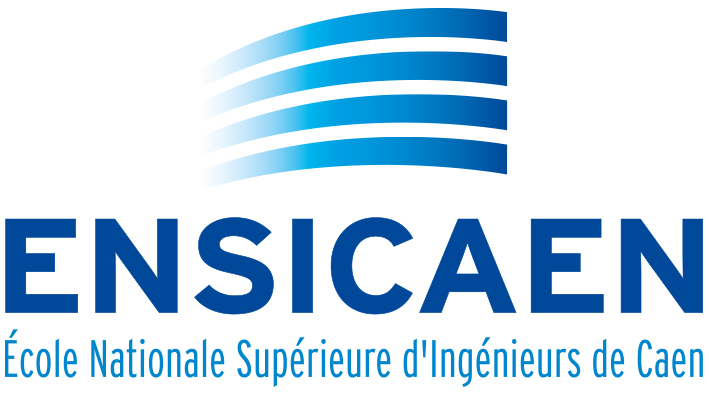
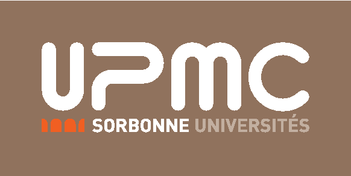
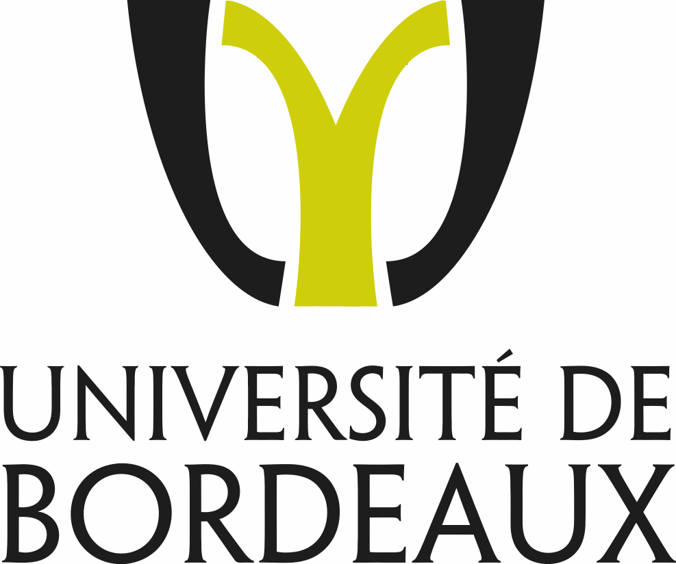
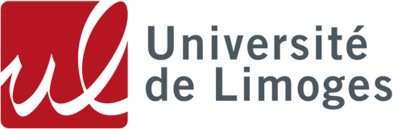
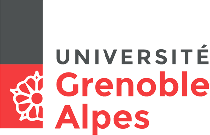
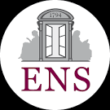
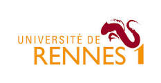

Visites de laboratoires 2017
Dix-sept chercheurs ont ouvert leurs portes l'année dernière pour accueir les dix meilleurs classés de chaque académie. Voici la liste des visites pour lequelles nous avons déjà les dates :
 Patrick Lacharme, chercheur en cryptographie appliquée, accueillera les lauréats de l'académie de Caen le mercredi 10 mai 2017 au sein du laboratoire GREYC spécialisé dans la recherche en informatique.
 Anne Canteaut chercheuse en cryptographie symétrique, accueillera les lauréats de l'académie d'Orléans-Tours le mercredi 17 mai 2017 au sein de l'équipe SECRET à l'Inria Paris spécialisé dans la recherche cryptographie, les codes correcteurs et l'information quantique.
Anne Canteaut chercheuse en cryptographie symétrique, accueillera les lauréats de l'académie d'Orléans-Tours le mercredi 17 mai 2017 au sein de l'équipe SECRET à l'Inria Paris spécialisé dans la recherche cryptographie, les codes correcteurs et l'information quantique.
 Razvan Barbulescu, chercheur sur les bases mathématiques de la cryptographie, accueillera les lauréats de l'académie de Paris le mercredi 14 juin 2017 au sein de l'institut mathématique de Jussieu-Paris rive gauche spécialisé dans la recherche en mathématiques pures.
Magali Bardet chercheuse en cryptographie post-quantique, accueillera les lauréats de l'académie de Rouen le mercredi 26 avril au sein du Laboratoire d'Informatique, du Traitement de l'Information et des Systèmes spécialisé dans la recherche dans l'informatique, les sciences et les technologies de l'information.
 Caroline Fontaine, chercheuse sur le chiffrement homomorphe et la confidentialité des données externalisées, accueillera les lauréats de l'académie de Rennes le mercredi 10 mai 2017 au sein du Laboratoire en sciences et techniques de l'information, de la communication et de la connaissance spécialisé dans la recherche dans les sciences et technologies de l'information et de la communication.
Caroline Fontaine, chercheuse sur le chiffrement homomorphe et la confidentialité des données externalisées, accueillera les lauréats de l'académie de Rennes le mercredi 10 mai 2017 au sein du Laboratoire en sciences et techniques de l'information, de la communication et de la connaissance spécialisé dans la recherche dans les sciences et technologies de l'information et de la communication.
 Damien Robert, chercheur en mathématiques pures, accueillera les lauréats de l'académie de Bordeaux et de Poitiers le mercredi 7 juin 2017 au sein d’Inria Bordeaux Sud Ouest spécialisé dans la recherche en cryptographie sur courbes elliptiques.
 Olivier Blazy chercheur sur la sécurité des protocoles cryptographiques et accueillera les lauréats de l'académie de Limoges le mercredi 17 mai 2017 au sein du laboratoire XLIM spécialisé dans la recherche en protection de l'information, les drones, ...
 Vanessa Vitse, chercheuse en cryptographie asymétrique, accueillera les lauréats de l'académie de Grenoble le mercredi 17 mai au sein de l’Institut Fourier spécialisé dans la recherche en mathématiques pures.
 Pascal Moitrel chercheur sur l’attaque par canaux cachés, attaque par fautes, cartes à puce, transactions sécurisées, accueillera les lauréats de l'académie de Marseille le mercredi 17 mai 2017 au sein de Security Lab de l’entreprise Gemalto spécialisé dans la recherche en attaques physiques (electronique, statistique, cryptographie, ...)
Pascal Moitrel chercheur sur l’attaque par canaux cachés, attaque par fautes, cartes à puce, transactions sécurisées, accueillera les lauréats de l'académie de Marseille le mercredi 17 mai 2017 au sein de Security Lab de l’entreprise Gemalto spécialisé dans la recherche en attaques physiques (electronique, statistique, cryptographie, ...)
 Damien Vergnaud chercheur en conception et analyse de protocoles cryptographiques cryptanalyse, accueillera les lauréats de l'académie de Amiens le mercredi 7 juin 2017 au sein du département d'informatique de l'École normale supérieure spécialisé dans la recherche en Informatique.
 Christophe Ritzenthaler chercheur en arithmétique et géométrie effective avec applications à la cryptographie, accueillera les lauréats de l'académie de Nantes le mercredi 10 mai 2017 au sein du laboratoire IRMAR spécialisé dans la recherche en mathématiques pures.